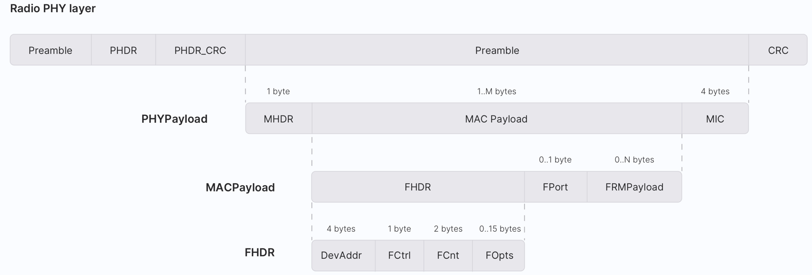
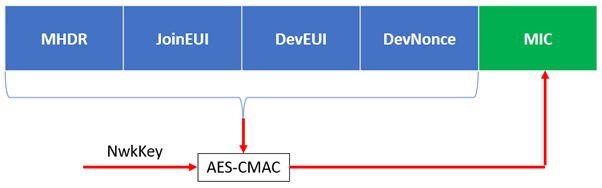
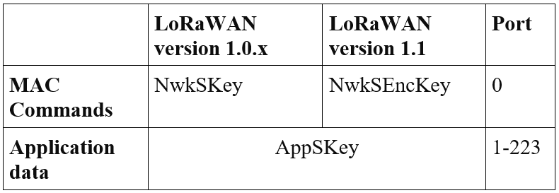
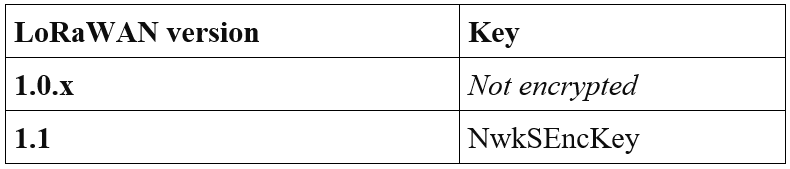
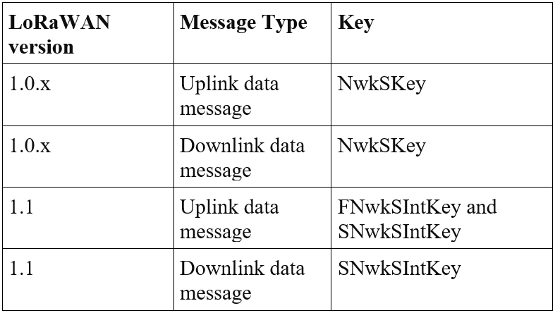

The Things Certified Security
This study guide has been written for students who are planning to take The Things Certified Security exam. It explains the following fundamental properties that support LoRaWAN security in detail:
- Mutual authentication
- Integrity protection
- Confidentiality
- End-to-end security
In addition to that, we briefly discuss the following security mechanisms:
- Replay protection
- Eavesdropping
- Spoofing
- Securing communication between network elements (backend interfaces)
We hope that you will find this study material useful and that the knowledge you acquire will help you pass The Things Certified Security exam.
Understanding Message Types #
LoRaWAN networks use several MAC message types for different purposes.
There are three MAC messages used for the device activation/registration:
- Join-request
- Join-accept
- Rejoin-request
There are four MAC messages used to carry MAC commands and application data (together or separately), known as data messages:
- Unconfirmed data uplink
- Unconfirmed data downlink
- Confirmed data uplink
- Confirmed data downlink
It is worth knowing the MAC message format before learning how the LoRaWAN security is implemented. A MAC message format breakdown is shown on the image below.

MAC Message Breakdown
MAC messages carry a payload. The messages used for the join procedure have the following payloads, which consist of several fields:
- Join-request
- Join-accept
- Rejoin-request
The payload carried by the data message is called MACPayload (MAC Payload). The term payload refers to the actual data in a packet, e.g. application data and/or MAC commands. Headers are appended to the payload for transport and then discarded at the message destination. The MACPayload consists of FHDR (Frame Header), FPort (Port Field), and the FRMPayload (Frame Payload) fields. Only the FRMPayload field and FOpts field can carry information. The PHYPayload is created by adding MHDR (MAC Header) and MIC (Message Integrity Code) to the MACPayload.
Join Procedure #
LoRaWAN provides two end device activation methods:
- ABP (Activation-by-Personalisation) - has some security vulnerabilities
- OTAA (Over-The-Air-Activation) - highly recommended
OTAA is the most secure way to activate an end device on a network. It ensures that only authorized end devices can access the LoRaWAN network by proving that both the end device and the network have the knowledge of root keys. This concept is also known as mutual authentication.
Root keys used in this procedure are unique 128-bit AES (Advanced Encryption Standard) symmetric keys.
The following keys and identifiers must be stored in an OTAA end device:
- Root keys - LoRaWAN v1.0.x uses a single root key called AppKey. LoRaWAN v1.1 uses two root keys called AppKey and NwkKey.
- DevEUI - a globally unique 64-bit end device identifier, assigned by the device manufacturer or device owner. Root key/s for a given end device are identified by its DevEUI.
The matching root keys should be stored on the network side. In LoRaWAN v1.0.x AppKey is stored in the Network Server, while in LoRaWAN v1.1 AppKey and NwkKey are stored in the Join Server. The process of storing root keys and identifiers on both ends is known as provisioning.
The join procedure is started by sending a Join-request message by an end device. The Join-request message consists of the following fields:
- AppEUI/JoinEUI
- DevEUI
- DevNonce
Note that LoRaWAN v1.1 and v1.0.4 use term JoinEUI instead of AppEUI.
The Join-request message is not encrypted, i.e. it is sent in plain text. However, it has its integrity protected by computing the MIC (Message Integrity Code). The MIC enables the network to check if the AppKey (1.0.x) and NwkKey (1.1) are correct. The MIC is computed over all message fields using AES-CMAC (AES Cipher-based Message Authentication Code) algorithm together with the root keys. The computed MIC is then added to the message itself. See images explaining this process below:
LoRaWAN v1.0.x
LoRaWAN v1.1

The following two subsections describe how the network processes the Join-request message.
In LoRaWAN v1.0.x #
After the Join-request frame is received, the Network Server (assume that the Network Server and the Application Server are co-located) computes the MIC over all message fields (except the MIC field) using AES-CMAC algorithm with the AppKey.
Then the computed MIC is compared to the MIC field in the Join-request frame. If these MICs are matched, the Network Server will authenticate the Join-request frame, otherwise the Join-request message gets discarded. This ensures that the Join-request message was not altered by any malicious actor during its journey.
If the end device is allowed to join the network and the MIC is correct, the Network Server prepaires a Join-accept message. The Join-accept message consists of the following fields:
- AppNonce - 3 bytes, random value
- NetID - 3 bytes, network ID
- DevAddr - 3 bytes, device address
- DLSettings - 1 byte, downlink parameters
- RxDelay - 1 byte, delay between TX and RX
- CFList - 16 bytes, optional list of channel frequencies
The MIC is calculated over the following Join-accept message fields using the AES-CMAC algorithm with the AppKey:
cmac = aes128_cmac(AppKey, MHDR | AppNonce | NetID | DevAddr | DLSettings | RxDelay | CFList)MIC = cmac[0..3]
The calculated MIC is then added to the Join-accept message.
The payload of the Join-accept message is encrypted using AES decrypt operation in ECB (Electronic Code Book) mode with the AppKey, so that the end device can use the AES encrypt operation to decrypt the message:
aes128_decrypt(AppKey, AppNonce | NetID | DevAddr | DLSettings | RxDelay | CFList | MIC)
Finally the Network Server sends the Join-accept message to the end device.
After the end device receives the Join-accept message, it derives two session keys locally, NwkSKey and AppSKey using AES encrypt:
NwkSKey = aes128_encrypt(AppKey, 0x01 | AppNonce | NetID | DevNonce | pad16)AppSKey = aes128_encrypt(AppKey, 0x02 | AppNonce | NetID | DevNonce | pad16)
Similarly, the Network Server derives session keys based on the root key and fields in the Join-request and Join-accept messages using AES encrypt:
NwkSKey = aes128_encrypt(AppKey, 0x01 | AppNonce | NetID | DevNonce | pad16)AppSKey = aes128_encrypt(AppKey, 0x02 | AppNonce | NetID | DevNonce | pad16)
Finally, the Network Server keeps the NwkSkey and shares the AppSKey with the Application Server. Note that the AppSKey is not visible to the Network Server, and that the NwkSKey is not visible to the Application Server.
In LoRaWAN v1.1 #
After the Join-request frame is received, the Join Server computes the MIC over all message fields (except the MIC field) using AES-CMAC algorithm with the NwkKey.
Then the computed MIC is compared to the MIC field in the Join-request message. If these MICs are matched, the Join Server will authenticate the Join-request message, otherwise the Join-request message gets discarded. This ensures that the Join-request message was not altered by any malicious actor during its journey.
If the end device is allowed to join the network and the MIC is correct, the network sends a Join-accept message. The Join-accept message consists of the following fields.
- JoinNonce - 3 bytes, device-specific counter value
- NetID - 3 bytes, network identifier
- DevAddr - 4 bytes, end device address
- DLSettings - 1 byte, downlink parameters
- RxDelay - 1 byte, delay between TX and RX
- CFList - 16 bytes, optional list of channel frequencies
The MIC is calculated over the following Join-accept message fields using the AES-CMAC algorithm with the JSIntKey:
cmac = aes128_cmac(JSIntKey, JoinReqType | JoinEUI | DevNonce | MHDR | JoinNonce | NetID | DevAddr | DLSettings | RxDelay | CFList)MIC = cmac[0..3]
If a LoRaWAN v1.1 device is provisioned with a LoRaWAN v1.0.x Network Server, the MIC of the Join-accept message is computed using the NwkKey.
cmac = aes128_cmac(NwkKey, MHDR | JoinNonce | NetID | DevAddr | DLSettings | RxDelay | CFList)MIC = cmac[0..3]
The calculated MIC is then added to the Join-accept message.
Then the payload of the Join-accept message is encrypted using AES decrypt operation in ECB (Electronic Code Book) mode with the NwkKey (if triggered by the Join-request) or JSEncKey (if triggered by the Rejoin-request type 0, 1, and 2) so that the end device can use AES encrypt operation to decrypt the message.
aes128_decrypt(NwkKey or JSEncKey, JoinNonce | NetID | DevAddr | DLSettings | RxDelay | CFList | MIC)
After the end device receives the Join-accept message it derives session keys locally.
The following 3 network session keys are derived using the NwkKey:
FNwkSIntKey = aes128_encrypt(NwkKey, 0x01 | JoinNonce | JoinEUI | DevNonce | pad16)SNwkSIntKey = aes128_encrypt(NwkKey, 0x03 | JoinNonce | JoinEUI | DevNonce | pad16)NwkSEncKey = aes128_encrypt(NwkKey, 0x04 | JoinNonce | JoinEUI | DevNonce | pad16)
The AppSKey is derived using the AppKey:
AppSKey = aes128_encrypt(AppKey, 0x02 | JoinNonce | JoinEUI | DevNonce | pad16)
The OptNeg field (can be found in the DLSettings field) is used to indicate whether the network supports LoRaWAN v1.0.x (unset) or v1.1 and later (set).
If the OptNeg is unset, the device reverts to the LoRaWAN v1.0 and the session keys are derived from the NwkKey as follow:
FNwkSIntKey = SNwkSIntKey = NwkSEncKey = aes128_encrypt(NwkKey, 0x01 | JoinNonce | NetID | DevNonce | pad16)AppSKey = aes128_encrypt(NwkKey, 0x02 | JoinNonce | NetID | DevNonce | pad16)
If the OptNeg is set, the AppSKey is derived from AppKey and the network session keys are derived from the NwkKey as follow:
AppSKey = aes128_encrypt(AppKey, 0x02 | JoinNonce | JoinEUI | DevNonce | pad16)FNwkSIntKey = aes128_encrypt(NwkKey, 0x01 | JoinNonce | JoinEUI | DevNonce | pad16)SNwkSIntKey = aes128_encrypt(NwkKey, 0x03 | JoinNonce | JoinEUI | DevNonce | pad16)NwkSEncKey = aes128_encrypt(NwkKey, 0x04 | JoinNonce | JoinEUI | DevNonce | pad16)
The Join Server also derives session keys based on the root keys and fields in the Join-request and Join-accept messages.
FNwkSIntKey = aes128_encrypt(NwkKey, 0x01 | JoinNonce | JoinEUI | DevNonce | pad16)SNwkSIntKey = aes128_encrypt(NwkKey, 0x03 | JoinNonce | JoinEUI | DevNonce | pad16)NwkSEncKey = aes128_encrypt(NwkKey, 0x04 | JoinNonce | JoinEUI | DevNonce | pad16)AppSKey = aes128_encrypt(AppKey, 0x02 | JoinNonce | JoinEUI | DevNonce | pad16)
Finally, the Join Server shares the network session keys (FNwkSIntKey, SNwkSIntKey, NwkSEncKey) with the Network Server and the AppSKey with the Application Server. Note that the AppSKey is not visible to the Network Server, and that the FNwkSIntKey, SNwkSIntKey, and NwkSEncKey are not visible to the Application Server.
Since both the end device and the network have session keys, from now all the messages will be encrypted using the AppSKey, and the integrity will be protected with the NwkSKey.
Encrypting the FRMPayload field #
The MACPayload of the data message contains a field called FRMPayload which is capable of carrying either a sequence of MAC commands (between the end device and the Network Server) or application data (between the end device and the Application Server). The FRMPayload field is encrypted using AES encrypt operation in CCM mode (counter with cipher block chaining message authentication code; counter with CBC-MAC). The encryption key used to encrypt the FRMPayload field depends on what it contains. Note that LoRaWAN uses a minor variation of the CCM, named CCM*.

Encrypting FOpts Field #
The FOpts (Frame Options) field can carry a series of MAC commands that are piggybacked onto the data frame.
The FOpts field is encrypted using AES encrypt operation in CCM* mode.
The following keys are used to encrypt the FOpts field in the MACPayload in different LoRaWAN versions for both uplink and downlink data messages.

Computing MIC #
The MIC is calculated after encrypting the payload. The MIC is computed for each packet (entire PHYPayload) using the AES-CMAC.
The following table presents which key is used to calculate the MIC of each data message type in LoRaWAN 1.0.x and 1.1.

When a LoRaWAN 1.1 device is provisioned with a LoRaWAN 1.0.x Network Server, the MIC of the uplink and downlink data messages are computed with the FNwkSIntKey.
End-to-end Security #
LoRaWAN provides end-to-end encryption for application payload exchange between end devices and the Application Server. Application payload refers to the data contained in the FRMPayload field. The Network Server also verifies the DevAddr for authenticating received messages.
Replay Protection #
Replay protection ensures that the receiver does not accept a frame that has already been received.
Join-request Messages #
The replay protection of the Join-request messages is protected using DevNonce. The DevNonce field is used when computing the MIC.
In LoRaWAN 1.0.x, DevNonce is a random value. It is used to keep track of the Join-request messages. The network server keeps track of a certain number of DevNonce values for each end device. It ignores any Join-requests that include a previously recorded DevNonce value.
In LoRaWAN v1.1, DevNonce is a counter starting at 0. It is used to keep track of the Join-request messages. The DevNonce value is incremented with every Join-request. The Network Server keeps track of the last DevNonce value used by the end device and ignores Join-requests if DevNonce is not incremented.
Similarly, the replay protection for the ReJoin-request messages is implemented with the RJcount0 (for ReJoin-request Type 0 or 2 messages) or RJcount1 (for ReJoin-request Type 1 messages).
Data Messages #
The replay protection of the data messages is implemented with the frame counters.
In LoRaWAN 1.0.x two frame counters are used to keep track of uplink and downlink messages:
- FCntUp - keeps track of the number of data messages sent from the end device to the Network Server.
- FCntDown - keeps track of the number of data messages sent from the Network Server to the end device.
These frame counters are stored in both the end device and the Network Server. Frame counters are initially set to 0 and incremented by the value 1 with each transmission.
If either the device or the network receives a message with a frame counter that is lower than the last one, the message is discarded.
In LoRaWAN 1.1 each end device maintains three frame counters to keep track of uplink and downlink data messages:
- Uplink - The frame counter, FCntUp is used to keep track of the data messages sent from the end device to the Network Server.
- Downlink - two frame counter schemes are available.
- Single counter scheme - all ports share the same downlink frame counter FCntDown when the device operates as a v1.0 device.
- Two-counter scheme - NFCntDown is managed by the Network Server, whereas the AFCntDown is managed by the Application Server.
- NFCntDown is used to keep track of data messages that transports MAC commands on port 0 and when the FPort field is missing (which means no FRMPayload field).
- AFCntDown is used to keep track of data messages on all other ports (1 - 223) when the device operates as a LoRaWAN 1.1 device.
Eavesdropping #
Since LoRaWAN provides two layers of security, the MAC payload is encrypted between the end device and the Network Server whereas the application payload is encrypted between the end device and the Application Server. This ensures only the authorised parties (end device, Network Server, Application Server) that hold the security keys (NwkSKey and AppSKey) can decrypt the payload and read the plain text content.
Spoofing #
The MACPayload in the data message is origin-authenticated and integrity protected with the MIC. This ensures only the authorised parties (end device, Network Server, Application Server) that hold the security keys (NwkSKey and AppSKey) can generate valid data frames.
Securing Communication Between Network Elements #
LoRaWAN uses HTTPS and VPN for securing communication among network elements (backend interfaces) such as the Network Server, Application Servers, and the Join Server.
Secure Elements #
The secure element is a small chip, for example Microchip’s hardware secure element ATECC608B-TNGLORA, that is used to securely store root keys and for performing cryptographic operations. The root keys are securely stored in the secure elements during the manufacturing process. Once stored, it is extremely difficult to read the root keys from the chip. Simultaneously, the matching root key/s for each secure element are provisioned on the Global Join Server.
Device manufacturers can easily integrate these secure element chips with their LoRaWAN end devices. During the join procedure, the secure element generates an identical pair of session keys from the root key/s, the same way the Join Server does it.
The Global Join Server allows the end-user to transfer these root keys anytime to a third-party Join Server. Once transferred, the end device generates new root keys using the rekeying procedure.